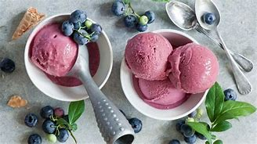
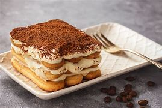

Delicious Italian Desserts
-

- Gelato: Creamy, rich Italian ice cream available in various flavors like pistachio, chocolate, and hazelnut.
- Cannoli Siciliani: Crispy pastry shells filled with sweet ricotta cheese and chocolate chips.
- Panna Cotta: Silky cooked cream dessert often served with berry coulis or caramel. 
- Tiramisu: Layered dessert of espresso-soaked ladyfingers and mascarpone cream dusted with cocoa.